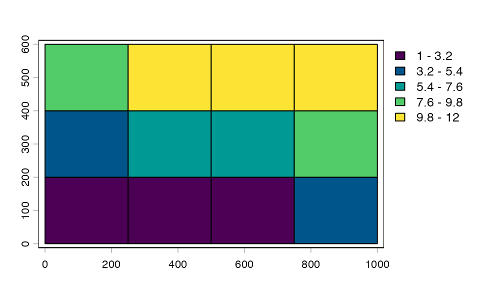
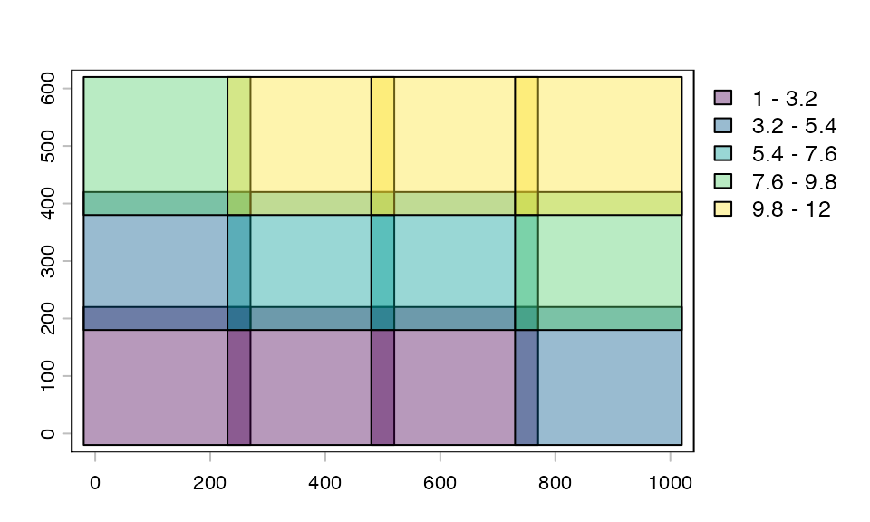
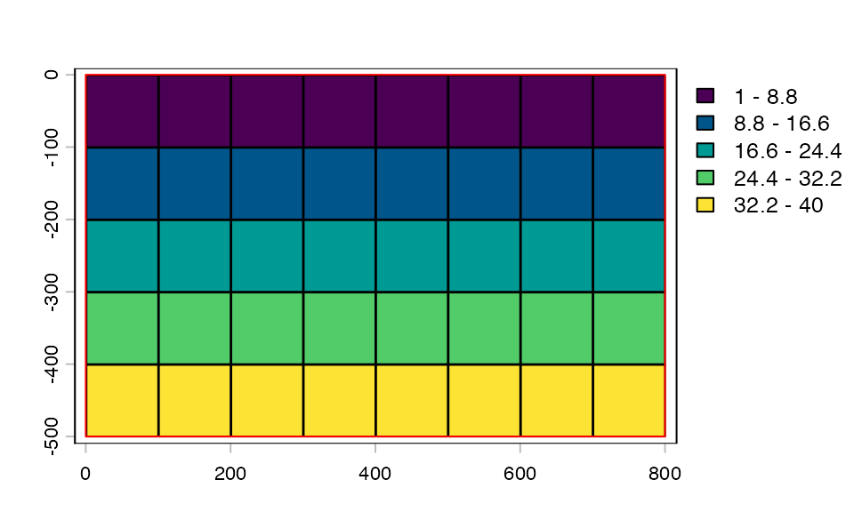
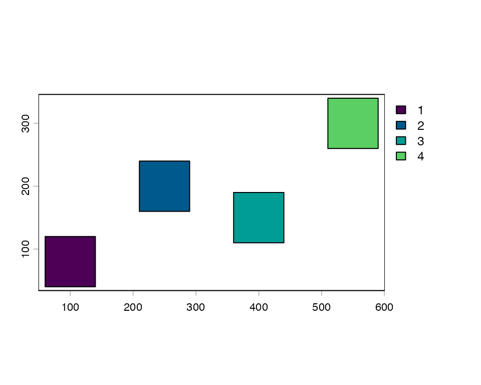
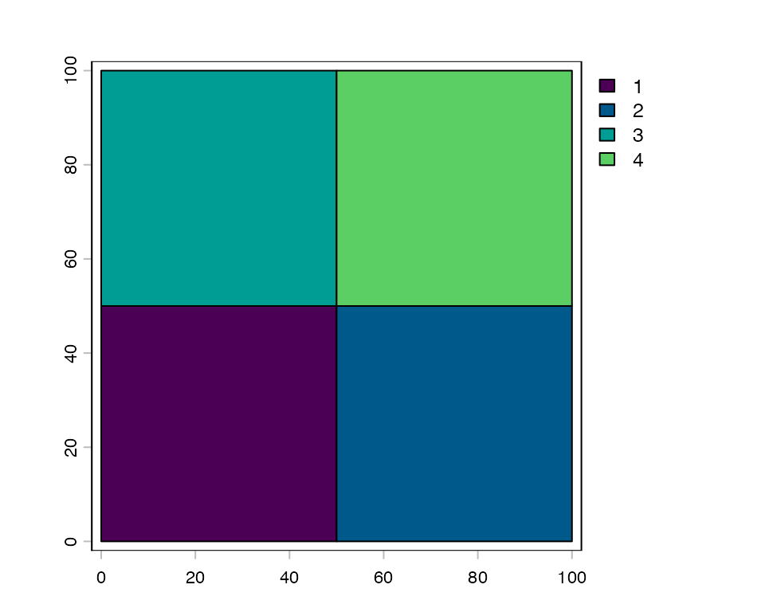
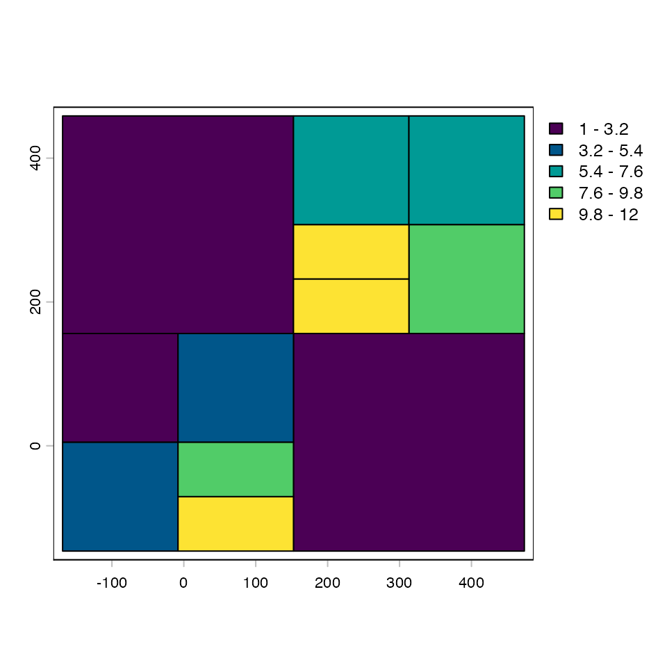
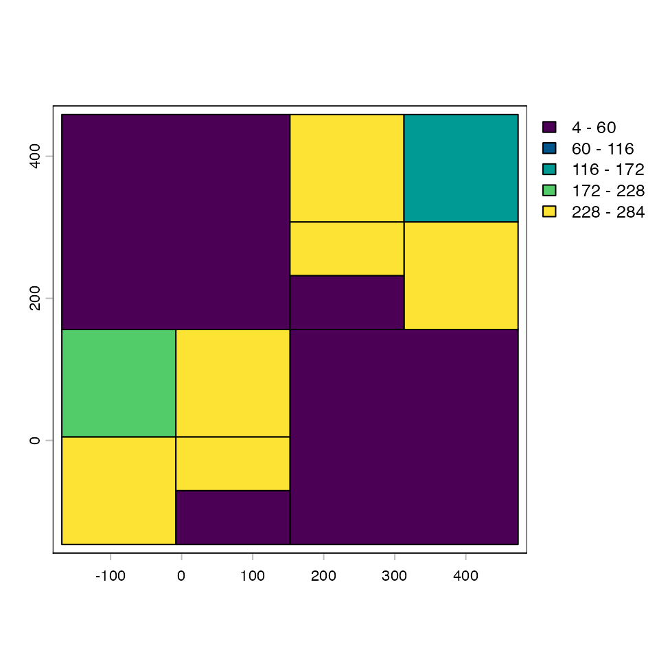
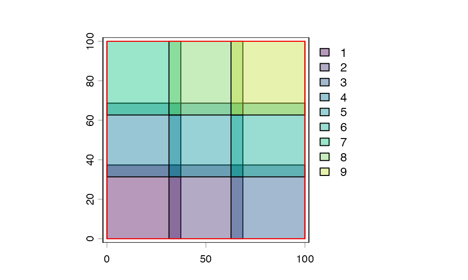

tilework provides four concrete tile plan classes, each suited to a different way of thinking about how a dataset should be divided:
| Class | Tile placement | Coordinate system | Returns |
|---|---|---|---|
spatialTilePlan |
Uniform grid | CRS units | SpatExtent |
pixelTilePlan |
Uniform grid | Pixel indices | integer[4] |
pointTilePlan |
Arbitrary centers | CRS or pixel |
SpatExtent or integer[4]
|
freeTilePlan |
Explicit per-tile bounds | Inherent to bounds | SpatExtent |
The choice between them is usually straightforward:
spatialTilePlan
pixelTilePlan
pointTilePlan
freeTilePlan (often
via quadtreePlan())spatialTilePlan
spatialTilePlan divides a spatial extent into a uniform
grid. Tile bounds are returned as SpatExtent objects, which
route directly into terra’s spatial windowing operations downstream.
Two things are required: an extent and a tile count request. The actual number of tiles generated will be at least the requested number, arranged as squarely as possible given the extent’s aspect ratio.
tp_spat <- tilePlan("spatial")
ext(tp_spat) <- c(0, 1000, 0, 600)
length(tp_spat) <- 12
tp_spat
#> Object of class spatialTilePlan
#> extent : 0, 1000, 0, 600 (xmin, xmax, ymin, ymax)
#> dim : 3 4
#> pad : 0
dim(tp_spat) # nrow x ncol of the tile grid
#> [1] 3 4
length(tp_spat)
#> [1] 12
plot(tp_spat)
Padding expands each tile’s bounds equally on all four sides at extraction time. The plan’s own extent is not affected.
tp_spat_padded <- tp_spat + 20
plot(tp_spat_padded, alpha = 0.4)
Indexing returns SpatExtent objects:
tp_spat[1] # first tile
#> [[1]]
#> SpatExtent : 0, 250, 0, 200 (xmin, xmax, ymin, ymax)
tp_spat[2, 3] # row 2, col 3
#> [[1]]
#> SpatExtent : 500, 750, 200, 400 (xmin, xmax, ymin, ymax)When to use: Any workflow where tile bounds need to
be expressed in the same coordinate system as the data — georeferenced
rasters, sf geometries, SpatVector
objects.
pixelTilePlan
pixelTilePlan divides an image into a uniform grid of
pixel-exact tiles. Bounds are returned as integer[4]
vectors c(xmin, xmax, ymin, ymax) in pixel index space,
routing into array/matrix subsetting operations downstream.
Three things are required: the image’s pixel dimensions
($pxdims), and the tile height and width in pixels
($nrows, $ncols).
tp_px <- tilePlan("pixel")
tp_px$pxdims <- c(500, 800) # 500 rows x 800 cols
tp_px$nrows <- 100
tp_px$ncols <- 100
tp_px
#> Object of class pixelTilePlan
#> tiles : 40
#> pxdim : 500, 800
#> pxrows : 100
#> pxcol : 100
#> dim : 5, 8
#> pad : 0
dim(tp_px)
#> [1] 5 8
length(tp_px)
#> [1] 40
plot(tp_px)
Padding for pixel plans is automatically zeroed against the top-left corner so that padded tiles on the first row/column do not produce negative indices.
tp_px_padded <- tp_px + 5
tp_px_padded[1] # first tile: note xmin/ymin are still >= 1
#> [[1]]
#> [1] 1 110 1 110
#> attr(,"tile")
#> [1] 1
tp_px[1] # unpadded for comparison
#> [[1]]
#> [1] 1 100 1 100
#> attr(,"tile")
#> [1] 1When to use: Image processing workflows where there is no meaningful spatial coordinate system — microscopy images, whole slide images, general computer vision pipelines. Also the right choice when pixel-exact tile boundaries matter (e.g. ML patch extraction where tile size must match model input exactly).
pointTilePlan
pointTilePlan places tiles at arbitrary (x, y) centers
with a uniform tile size. Instead of dividing a grid, you provide the
locations and the plan generates one tile per point.
This is the right choice when the locations to sample are known in advance — cell nuclei, tissue landmarks, sampling sites, feature centroids — rather than when you want to exhaust a spatial extent.
tp_pt <- pointTilePlan("spatial")
tp_pt$coords <- cbind(
x = c(100, 250, 400, 550),
y = c(80, 200, 150, 300)
)
tp_pt$width <- 80
tp_pt$height <- 80
tp_pt
#> Object of class pointTilePlan
#> input : spatial
#> output : spatial
#> n : 4
#> tile_dims : 80, 80 (height, width)
#> pad : 0
length(tp_pt)
#> [1] 4
plot(tp_pt)
input and output
pointTilePlan has two independent coordinate mode
settings:
$input — the space in which
$coords, $width, and $height are
expressed. Either "spatial" (CRS units) or
"pixel" (pixel indices).$output — the type of bounds returned
by getTile(). Either "spatial" (returns
SpatExtent) or "pixel" (returns
integer[4]).By default output matches input. Setting
them to different values enables cross-mode conversion.
The four combinations:
input |
output |
Meaning |
|---|---|---|
"spatial" |
"spatial" |
Spatial coords in, spatial bounds out |
"pixel" |
"pixel" |
Pixel coords in, pixel bounds out |
"spatial" |
"pixel" |
Define location in CRS, extract pixel bounds |
"pixel" |
"spatial" |
Define location in pixel space, extract spatial bounds |
The most common case. Coordinates, tile dims, and padding are all in CRS units. No raster metadata needed.
tp_s2s <- pointTilePlan(input = "spatial", output = "spatial")
tp_s2s$coords <- cbind(x = c(200, 500), y = c(150, 400))
tp_s2s$width <- 100
tp_s2s$height <- 100
tp_s2s[1] # SpatExtent
#> [[1]]
#> SpatExtent : 150, 250, 100, 200 (xmin, xmax, ymin, ymax)Coordinates and tile dims are in pixel indices. Useful when sampling locations come from image analysis (e.g. detected cell positions in pixel space).
tp_p2p <- pointTilePlan(input = "pixel", output = "pixel")
tp_p2p$coords <- cbind(x = c(120L, 340L, 560L), y = c(80L, 200L, 310L))
tp_p2p$width <- 51L # odd dims give unambiguous center pixel
tp_p2p$height <- 51L
tp_p2p[2] # integer[4]: col_min, col_max, row_min, row_max
#> [[1]]
#> [1] 315 365 175 225
#> attr(,"tile")
#> [1] 2
#> attr(,"x")
#> [1] 340
#> attr(,"y")
#> [1] 200Note: tile dims should be odd in pixel mode. With
even dimensions, center ± width/2 is non-integer and bounds
are truncated, biasing left/up.
Cross-mode conversion requires knowing how CRS coordinates map to pixel indices, which means the raster’s resolution and extent must be known.
When getTile() is called with a SpatRaster,
this information is injected automatically from the raster — you do not
need to set $rast_dims or $extent manually.
They are only needed for standalone [i] calls without a
raster (e.g. plotting, validation).
f <- system.file("ex/elev.tif", package = "terra")
r <- rast(f)
# spatial input, pixel output
tp_s2p <- pointTilePlan(input = "spatial", output = "pixel")
tp_s2p$coords <- cbind(
x = c(5.8, 6.0, 6.2),
y = c(49.9, 50.0, 50.1)
)
tp_s2p$width <- 0.1
tp_s2p$height <- 0.1
# Standalone [i] requires rast_dims and extent:
tp_s2p$rast_dims <- dim(r)[1:2]
tp_s2p$extent <- as.vector(ext(r))
tp_s2p[1] # pixel bounds, derived from spatial coords + raster metadata
#> [[1]]
#> [1] 9 8 36 35
#> attr(,"tile")
#> [1] 1
#> attr(,"x")
#> [1] 5.8
#> attr(,"y")
#> [1] 49.9
# At getTile() time, rast_dims and extent are injected from the raster
# automatically — no manual setup needed for the extraction step:
tiles <- getTile(r, tp_s2p, i = 1:3)
dim(tiles[[1]])
#> [1] 2 2 1freeTilePlan and quadtreePlan
freeTilePlan stores explicit per-tile bounds as an n × 4
matrix (xmin, xmax, ymin, ymax). Unlike the grid-based
plans, tile sizes can vary freely — bounds are the canonical
representation, not a formula.
The simplest use is to supply bounds directly:
tp_free <- freeTilePlan()
tp_free$bounds <- rbind(
c(0, 50, 0, 50),
c(50, 100, 0, 50),
c(0, 50, 50, 100),
c(50, 100, 50, 100)
)
tp_free
#> Object of class freeTilePlan
#> n : 4
#> xrange : [0, 100]
#> yrange : [0, 100]
#> pad : 0
length(tp_free)
#> [1] 4
tp_free[2] # SpatExtent
#> [[1]]
#> SpatExtent : 50, 100, 0, 50 (xmin, xmax, ymin, ymax)
plot(tp_free)
quadtreePlan()
The more common workflow is to let quadtreePlan() build
the freeTilePlan automatically. It starts from a coarse
tilePlan, applies FUN to each tile, and
recursively splits tiles whose value exceeds threshold.
Splitting continues until all tiles are below the threshold, smaller
than min_tile_size, or max_depth is reached.
After splitting, neighboring leaf tiles whose combined FUN
value stays ≤ threshold are merged back into a single
rectangle, reducing tile count in sparse regions.
FUN must return a single numeric scalar per tile —
typically a count, density, or variance. The last measured value for
each leaf is stored in the n_records metadata column.
# Synthetic two-cluster point cloud
set.seed(42)
pts <- terra::vect(
cbind(x = rnorm(1000, 0, 50), y = rnorm(1000, 0, 50))
)
pts <- rbind(pts, terra::vect(
cbind(x = rnorm(1000, 300, 50), y = rnorm(1000, 300, 50))
))
# tileApply requires on-disk data
f_pts <- tempfile(fileext = ".shp")
terra::writeVector(pts, f_pts)
pts_proxy <- terra::vect(f_pts, proxy = TRUE)
# Coarse 2×2 starting grid
tp_start <- tilePlan("spatial")
ext(tp_start) <- ext(pts)
length(tp_start) <- 4L
tp_start
#> Object of class spatialTilePlan
#> extent : -168.586954127526, 473.545480173295, -146.423858928878, 458.725989214004 (xmin, xmax, ymin, ymax)
#> dim : 2 2
#> pad : 0
fp <- quadtreePlan(
x = pts_proxy,
tiles = tp_start,
FUN = function(x) length(x), # point count per tile
threshold = 300L,
min_tile_size = 10
)
#> Warning: Your code is running sequentially. For better performance, consider using a
#> parallel plan like:
#> future::plan(future::multisession)
#> To silence this warning, set options("tilework.warn_sequential" = FALSE)
#> Warning: Your code is running sequentially. For better performance, consider using a
#> parallel plan like:
#> future::plan(future::multisession)
#> To silence this warning, set options("tilework.warn_sequential" = FALSE)
#> Warning: Your code is running sequentially. For better performance, consider using a
#> parallel plan like:
#> future::plan(future::multisession)
#> To silence this warning, set options("tilework.warn_sequential" = FALSE)
fp
#> Object of class freeTilePlan
#> n : 12
#> xrange : [-168.587, 473.545]
#> yrange : [-146.424, 458.726]
#> pad : 0
length(fp)
#> [1] 12
plot(fp)
High-density regions are subdivided into many small tiles; sparse
regions remain as large tiles (or are merged back if neighbors are also
sparse). n_records records the point count for each
leaf:
summary(fp$n_records)
#> Min. 1st Qu. Median Mean 3rd Qu. Max.
#> 4.0 48.5 219.0 166.7 244.5 284.0
plot(fp, values = "n_records")
The resulting freeTilePlan is a standard
tilePlan and works with tileApply(),
tileIterator, and tileGroup like any
other.
When to use:
$bounds<-).Limitations: @tile_dims is not
populated, so operations that require uniform tile dimensions
(e.g. extend = TRUE in getTile()) are not
supported.
Regardless of plan type, two practical considerations apply:
Tile size controls the memory footprint per tile
and, for ML workflows, should be chosen with the model’s expected input
dimensions in mind. Larger tiles mean fewer total tiles but more memory
per tile. If the natural tile size does not match the model input
exactly, terra::aggregate() or
terra::resample() can resize the extracted tile inside
FUN rather than constraining the tile plan itself.
Padding handles edge effects for operations that need spatial context (convolutions, focal statistics, buffer-based extractions). The pad value should be at least as large as the half-width of the operation’s kernel or buffer radius. For pixel plans, padding is zero-clamped at image edges; for spatial plans it extends beyond the plan extent, so shrink the plan extent inward by the pad amount if you want tiles to stay within the data boundary.
tp_demo <- tilePlan("spatial")
ext(tp_demo) <- c(0, 100, 0, 100)
length(tp_demo) <- 9
# shrink extent inward by pad so padded tiles stay within data
pad <- 3
ext(tp_demo) <- ext(tp_demo) - pad
tp_demo <- tp_demo + pad
plot(tp_demo, alpha = 0.4)
plot(ext(c(0, 100, 0, 100)), add = TRUE, border = "red")
| Plan | Tile placement | Coordinate system | Returns | Primary use case |
|---|---|---|---|---|
| spatialTilePlan | Uniform grid | CRS units | SpatExtent | Georeferenced rasters and vectors |
| pixelTilePlan | Uniform grid | Pixel indices | integer[4] | Images, ML patch extraction |
| pointTilePlan | Arbitrary centers | CRS or pixel (configurable) | SpatExtent or integer[4] | Sampling at known locations |
| freeTilePlan | Explicit per-tile bounds | Inherent to bounds | SpatExtent | Adaptive/variable-size tiling; quadtree decomposition |